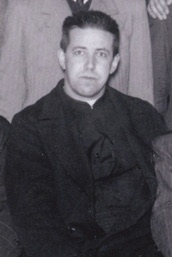

Misionari, pastiri i mistici (Pojedinačna proglašenja)
Svećenik · Odgojitelj · Služitelj siromašnih
Sv. Alberto Hurtado Cruchaga
Čileanski isusovac povezao je odgoj mladih, brigu za beskućnike i zauzimanje za radnike. Osnovao je Hogar de Cristo, Kristov dom, pozivajući ljude da ljubav prema Bogu pokažu brigom za bližnjega.

Izvor slike
- Spomendan
- 18. kolovoza
- Zaštitništvo
- Nije navedeno u izvoru
- Djelovanje
- Mladi i odgoj · Obrazovanje i poučavanje vjere · Siromašni i isključeni · Radnici i društvena pravda
- Razdoblje
- 20. stoljeće
- Slavi se
- 18. kolovoza
- Rodno ime
- Luis Alberto Miguel Hurtado Cruchaga
Životopis
Sveti Alberto Hurtado Cruchaga bio je čileanski isusovac i svećenik koji je odgoj mladih, brigu za beskućnike i zauzimanje za radnike povezao s dubokim životom molitve. Poznat kao Padre Hurtado, utemeljio je Hogar de Cristo, Kristov dom, te okupljao ljude spremne da u siromasima prepoznaju braću i sestre. Njegovo svećeništvo obuhvatilo je učionice i duhovne vježbe, ulice Santiaga i radničke organizacije. U svim tim službama nastojao je da ljubav prema Kristu dobije konkretan izraz u odnosu prema čovjeku koji treba pomoć.
Rodio se 22. siječnja 1901. u Viña del Maru u Čileu. Kada su mu bile četiri godine, umro mu je otac. Majka je, opterećena dugovima, morala prodati skromno obiteljsko imanje uz gubitak. S dvojicom sinova ostala je bez sigurnosti vlastita doma, pa su živjeli uz pomoć rodbine. Alberto je tako već kao dijete iskusio materijalnu oskudicu i ovisnost o dobroti drugih.
Stipendija mu je omogućila školovanje u isusovačkom kolegiju svetoga Ignacija u Santiagu od 1909. do 1917. Ondje je sudjelovao u Marijinoj kongregaciji, zajednici koja je povezivala molitvu, duhovni rast i apostolat. Među učenicima se poticalo služenje potrebitima, a Alberto je upoznavao siromašne gradske četvrti i pomagao njihovim stanovnicima. Marijanska pobožnost nije ostala izdvojen dio njegova odrastanja: pratila je njegovo sazrijevanje u vjeri i kasnije svećeničko djelovanje. Već u školskim godinama razmišljao je o ulasku u Družbu Isusovu.
Obiteljske prilike zahtijevale su da tu želju odgodi. Ostao je pomagati majci i mlađemu bratu te je, uz rad, studirao pravo na Katoličkom sveučilištu u Čileu. Studij je započeo 1918., a zanimalo ga je i radno pravo, područje koje će ostati blisko njegovu socijalnom apostolatu. Studiranje je prekinula obvezna vojna služba. Pravni je studij završio u kolovozu 1923., nakon što je mogao urediti potporu obitelji. Dana 14. kolovoza iste godine stupio je u isusovački novicijat u Chillánu. Njegovu ulasku u red prethodile su tako godine odgovornosti za najbliže i strpljiva čekanja.
Redovnička formacija odvela ga je izvan Čilea. Od 1925. studirao je humanističke znanosti u argentinskoj Córdobi, a zatim je nastavio filozofsku i teološku izobrazbu u Španjolskoj. Nakon odlaska iz Španjolske studij je nastavio u belgijskome Louvainu. Ondje je 24. kolovoza 1933. zaređen za svećenika, a 1935. stekao je doktorat iz pedagogije i psihologije. Isusovačku je formaciju dopunio završnim razdobljem duhovne izobrazbe u Drongenu. Prije povratka upoznavao je europske odgojne i socijalne ustanove, proučavajući načine rada koji su mu mogli pomoći u služenju u domovini.
U Čile se vratio u siječnju 1936. Predavao je vjeronauk u kolegiju svetoga Ignacija i pedagogiju na Katoličkom sveučilištu u Santiagu. Posebno mu je bilo stalo do duhovnoga oblikovanja učenika i studenata. Vodio je Marijinu kongregaciju među mladima i uključivao ih u poučavanje vjeronauka u siromašnim sredinama. Mladi su uz njega dobivali priliku povezati vlastitu vjersku izobrazbu s odgovornošću za ljude kojima su nedostajali obrazovanje i redovita pastoralna skrb. Njegov se pedagoški rad nastavljao i izvan nastave, u osobnim razgovorima, ispovijedanju i duhovnom vodstvu.
Vodio je duhovne vježbe na kojima je sudionike usmjeravao prema osobnom odnosu s Kristom i razlučivanju vlastita poziva. Neki su među njima prihvatili svećenički ili redovnički život, a mnoge je pripravljao za kršćansko djelovanje u obitelji, zanimanju i društvu. U Katoličkoj akciji služio je mladima u Santiagu i na nacionalnoj razini. Laici su u njegovu apostolatu imali stvarnu odgovornost: trebali su poznavati svoju vjeru, produbljivati molitvu i djelovati ondje gdje su živjeli. Takav je rad tražio vrijeme za slušanje i odgoj pojedinca, uz organiziranje zajedničkih pothvata.
Godine 1941. objavio je knjigu ¿Es Chile un país católico?, u kojoj je razmatrao vjersko stanje svoje zemlje. Brinuli su ga nedostatak svećenika i slaba dostupnost vjerske pouke, osobito među siromašnima i u udaljenim krajevima. Katoličko ime zemlje za njega je uključivalo zahtjev da se ozbiljno razmotre život vjernika i potrebe onih do kojih pastoralna skrb teško dopire. Njegovi spisi i odgojni rad pripadali su istoj svećeničkoj brizi za vjeru koja se hrani molitvom i očituje djelima.
U listopadu 1944. za vrijeme duhovnih vježbi uputio je poziv na pomoć siromašnima i ljudima bez doma. Iz toga je poticaja nastao Hogar de Cristo. Želio je stvoriti mjesto u kojemu će napušten čovjek pronaći toplinu obiteljskoga ozračja, uz hranu, odjeću i prenoćište. Dobročinitelji su odgovorili novcem, zemljištem i drugim prilozima. Djelo je utemeljeno 1944., a u prosincu je položen prvi kamen. Prvi su prostori blagoslovljeni u svibnju 1945. Postupno su se otvarale kuće za djecu, mlade, žene i muškarce kojima je nedostajala osnovna životna sigurnost.
Briga za djecu uključivala je odgoj i pripremu za samostalan život. Uz prihvatilišta razvijala se stručna izobrazba, kako bi mladi mogli naučiti zanat i radom osiguravati budućnost. Hurtado je 1945. posjetio Boys Town u Sjedinjenim Američkim Državama, djelo svećenika Edwarda Flanagana u Nebraski, da upozna iskustva takva odgojnog rada. U Santiagu je i sam noću obilazio ulice zelenim kamionetom, tražeći ljude kojima je bila potrebna pomoć. Njegovi suradnici i dobročinitelji omogućivali su da neposredna pomoć preraste u trajnu skrb. Kristov dom zahtijevao je hranu, prostor, odjeću, odgojitelje i ustrajnu potporu mnogih ljudi.
Služenje siromašnima za Hurtada je imalo izvor u jedinstvu s Kristom. Molitva i marijanska pobožnost hranile su njegovu sposobnost da u drugome vidi člana Kristova mističnoga tijela. Iz te je vjere proizlazilo poštovanje prema dostojanstvu svakoga primljenog čovjeka. U Hogaru je poticao obiteljski duh i osobnu blizinu, a suradnike uključivao u djelo koje je nadilazilo snage jednoga svećenika. Ujedno je tražio odgovore na društvene uvjete iz kojih su nastajali oskudica i napuštenost.
Godine 1947. osnovao je Acción Sindical y Económica Chilena, poznatu pod pokratom ASICH. Ta je organizacija promicala odgoj radničkih predstavnika i socijalno djelovanje nadahnuto naukom Crkve. Hurtado se bavio dostojanstvom rada, sindikalnim organiziranjem i odgovornošću kršćana za društveni poredak. Pisao je o socijalnom humanizmu i sindikatima, nastojeći vjernicima približiti crkveni socijalni nauk i njegovu primjenu. Godine 1951. utemeljio je časopis Mensaje, čiji je prvi broj izišao 1. listopada. Želio je poduprijeti ozbiljno kršćansko promišljanje javnoga života i društvenih problema.
Godine 1952. obolio je od raka gušterače. Umro je 18. kolovoza iste godine u Santiagu, u pedeset i drugoj godini života. Iza njega ostali su ljudi koje je duhovno pratio, odgojni rad, društveni spisi i ustanove nastale iz brige za siromašne. Papa Ivan Pavao II. proglasio ga je blaženim 16. listopada 1994., a papa Benedikt XVI. svetim 23. listopada 2005. Spomendan svetoga Alberta Hurtada Cruchage slavi se 18. kolovoza.
Pročitaj više na izvornoj stranici ↗